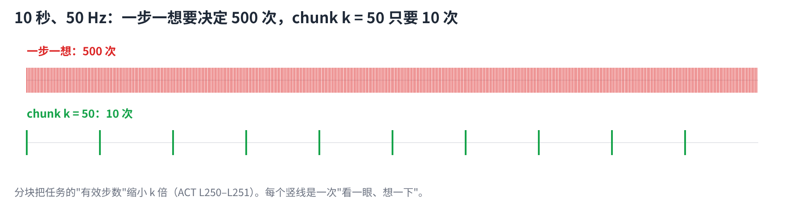
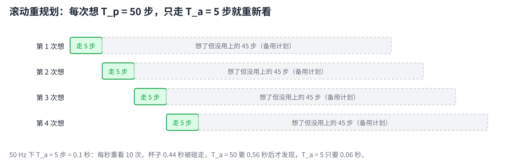

第 3 章 · 动作分块（action chunking）：看一眼，规划一整段
本地运行
git clone https://github.com/wikieden/vla-from-scratch
cd vla-from-scratch/code/notebooks
pip install jupyterlab torch numpy
jupyter lab ch03_action_chunking.ipynb也可以下载后直接用 VS Code 打开 .ipynb 运行。需要 GPU 的章节在 Colab 里选「代码执行程序 → 更改运行时类型 → GPU」。
本章回答：为什么现代 VLA 一次输出一整段动作，而不是一步一个？
讲解日期：2026-11-04 · 上一章：第 2 章 行为克隆 · 下一章：第 4 章 多峰
对应原文：materials/text/papers/act-aloha-2304.13705.txtL250–L251（有效步数缩小 k 倍）、L290–L303（接缝跳变、时间集成）；diffusion-policy-2303.04137.txtL95、L115–L120、L230–L232（\(T_p\) / \(T_a\)）；smolvla-2506.01844.txtL118、L319
本章缩写：ACT = Action Chunking with Transformers；\(T_p\) / \(T_a\) = prediction / action execution horizon（预测长度 / 执行长度）；RTC = Real-Time Chunking（实时 / 分块）；SmolVLA = Small VLA（小号 VLA）。全表见 appendix-glossary.md
讲解
第 1 步：一次出一段，做决定的次数变少
白话类比：写字
写"永"字时，你不会每一笔之前都抬头重新看一眼、想一下再落笔，而是看一眼就把整个字的笔画规划好，一口气写完。写完一个字再看一眼，规划下一个字。
机器人也可以这样：
| 做法 | 每次输出 | 一个时刻做什么 |
|---|---|---|
| 一步一想（第 1–2 章） | 1 个动作向量 | 看 → 想 → 走一步 → 再看 → 再想 … |
| 动作分块 | k 个动作向量（一个 chunk） | 看一眼 → 想出接下来 k 步 → 把 k 步走完 → 再看一眼 |
为什么能减少复合误差
第 2 章说过，每做一次决定都可能出一点错，错误会一环一环滚大。分块后，同样长的任务里做决定的次数变成原来的 1/k。ACT 论文的说法是把任务的"有效步数"（effective horizon）缩小 k 倍：
"This implies a k-fold reduction in the effective horizon of the task"（
materials/text/papers/act-aloha-2304.13705.txt第 250–251 行）
另一个好处：人示范时动作本来就是连贯的一整段（比如一次停顿、一次犹豫），一次预测一整段更容易学到这种连贯性。
现在的 VLA 都这么做
π0 每次输出 H = 50 个动作向量，控制频率最高 50 Hz（pi0-2410.24164.txt 中 "H = 50 for our tasks" 和 "up to 50 Hz"）。

图 3-1 · 10 秒、50 Hz：每根竖线是一次"看一眼、想一下"。
第 2 步：代价是"闭着眼走一段"
分块有个副作用：走 chunk 的这 k 步里，机器人不再看新画面，等于闭着眼照计划走完。
白话类比：你看一眼纸，闭上眼写完整个"永"字。写到一半有人把纸挪了 1 厘米，你不会察觉，后半个字就写歪了。
机器人的例子：π0 一个 chunk 管 1 秒。如果第 0.1 秒杯子被碰得滑开了，机器人还会照原计划再"盲走" 0.9 秒，夹个空。
还有一个小毛病：每走完一段就换一个新计划，新旧两段接缝处动作可能突然一跳，机器人看起来一顿一顿的。ACT 原文："a new environment observation is incorporated abruptly every k steps and can result in jerky robot motion"（act-aloha-2304.13705.txt 第 290–293 行）。
所以 k 不是越大越好：
| k | 好处 | 坏处 |
|---|---|---|
| 小（一步一想） | 反应快，随时看新画面 | 决定多，复合误差大 |
| 大（一次想很久） | 决定少，动作连贯 | 盲走时间长，接缝处容易跳 |
第 3 步：想一大段，只走一小段（滚动重规划）
做法：每次照样想 50 步，但只走前面一小段（比如 5 步），然后马上重新看一眼、重新想 50 步，再走前 5 步……想得远，走得短。
白话类比：开车导航。导航每次都规划到终点的整条路线，但你只开到下一个路口，它就根据新的路况重新规划一次。
Diffusion Policy 把这两个长度分开取名（diffusion-policy-2303.04137.txt 第 230–232 行）：
| 符号 | 名字 | 含义 | 你的例子 |
|---|---|---|---|
| \(T_p\) | prediction horizon | 每次想多少步 | 50 |
| \(T_a\) | action execution horizon | 想完之后真正走多少步 | 5 |
论文把它叫 receding-horizon control，说这样 "allows the policy to continuously re-plan its action in a closed-loop manner"（第 115–120 行）。
\(T_a\) 决定了最慢多久能发现变化：50 Hz 下走 5 步 = 0.1 秒，也就是每秒重看 10 次（10 Hz）。盲走时间从 1 秒缩到 0.1 秒。
两个细节
- 实际系统不比较新旧计划，每到 \(T_a\) 步就直接换成新计划。重新想一次本来就要花算力，再比较一遍没有好处。
- 每秒重看 10 次，意味着模型每次推理必须在 0.1 秒内算完，否则来不及。大模型（π0 有 30 多亿参数）算得慢怎么办，是第 13 章 RTC 要解决的问题。
ACT 走得更极端：每一步都重新想，于是同一个时刻会有好几个旧计划和新计划都给出了动作，再把它们加权平均（temporal ensembling，act-aloha-2304.13705.txt 第 293–303 行），动作更平滑。

图 3-2 · 滚动重规划：每次只用前 5 步，其余 45 步是备用计划。
场景代码：LeRobot 里 ACT 的配置（materials/code/lerobot/repo/src/lerobot/policies/act/configuration_act.py L45–L85），三个字段正好对应本章三步：
from lerobot.policies.act.configuration_act import ACTConfig
cfg = ACTConfig(
chunk_size=100, # 每次想多少步（T_p）；默认 100
n_action_steps=100, # 想完真正走多少步（T_a）；改小就是滚动重规划
temporal_ensemble_coeff=None, # 设成数值就打开 ACT 的时间集成（此时 n_action_steps 必须是 1）
)
公式
和第 1 章的 \(a_t = \pi(o_t, \ell)\) 比，输入没变，输出从 1 个向量变成 k 个。
动画演示：滚动重规划：想 50 步，走几步再重想

可交互版：animations/03-receding-horizon.html（用浏览器打开，可播放、单步、换随机数重来）。
怎么看：
- 粗青线是杯子的位置，第 0.44 秒杯子被碰到了别处。两条路每次都想 50 步（1 秒）。
- 上面 T_a = 50：整段盲走完才重看，0.56 秒后才发现杯子挪了；下面 T_a = 5：每 0.1 秒重看，0.06 秒后就转向。
- 底边的小竖线是每次"重新想"的时刻。T_a = 5 那条竖线很密，每次想的 50 步只用了前 5 步，其余被下一次计划替换。对应第 2、3 题。
练习与作答记录
题 1：一个任务要 10 秒，机器人控制频率是 50 Hz（一秒输出 50 个动作向量）。 1. 一共要走多少步？ 2. 一步一想的话，模型要做多少次决定？ 3. 用 π0 的 chunk（k = 50），只要做多少次决定？每个 chunk 管多长时间？
作答（2026-11-04，原话）：1=500，2=500，3=10次，每个chunk1秒 ✓
点评：全对。10 秒 × 50 Hz = 500 步；一步一想要做 500 次决定；k = 50 时只要 500 / 50 = 10 次，每段 50 / 50 Hz = 1 秒。决定次数从 500 降到 10，这就是"有效步数缩小 k 倍"。
题 2：分块的坏处是盲走。有没有办法既保留"一次想一整段"的好处，又能更快发现杯子被碰走了？大胆猜一个做法（提示：想好的 50 步一定要全部走完吗？）。
作答（2026-11-04，原话）：不用可以做个最低响应时间指标，比如10hz，每次执行5步看一下，如果推理结果变化了，就换 ✓
点评：对，而且这正是 Diffusion Policy 的做法：每次想 \(T_p\) 步、只走 \(T_a\) 步就重新规划（receding horizon）。"最低响应时间"这个角度也很好：\(T_a\) = 5 步 @ 50 Hz = 0.1 秒，盲走时间从 1 秒降到 0.1 秒。 - 小修正：实际不判断"推理结果变没变"，到点就直接换成新计划。 - 你提的 10 Hz 带出了一个新约束：每次推理必须在 0.1 秒内完成（第 13 章 RTC）。
题 3：每秒重看 10 次，每次都想 50 步、只走 5 步。那每次想出来的 50 步里，有多少步是"想了但没用上"的？这样浪费吗？说说你的看法。
作答（2026-11-04，原话）：有45步没用上，不算浪费，因为滚动规划中是需要不断监督执行情况根据变化做调整，另外如果万一推理慢了点也不容易卡帧，导致机器人暂停 ✓
点评：对，两个理由都成立，第二个尤其到位。
1. 随时调整：没用上的 45 步是"备用计划"，换成新计划正是为了跟上变化。
2. 防卡帧：这就是 SmolVLA 的异步推理（asynchronous inference）。机器人一边走手上这段，一边让模型在后台算下一段；新计划还没算好时，就接着走旧计划剩下的步数，不会停下来干等。原文："decouples action execution from perception and prediction"（smolvla-2506.01844.txt 第 118 行），以及同步做法会让 "the robot being idle while computing"（第 319 行）。第 13 章 RTC 也建立在这一点上。
3. 补一个理由：想得远，让走的这 5 步更好。模型规划 50 步时考虑了后面的整体走向，所以前 5 步和长远意图是连贯的；只想 5 步的话，动作容易短视、来回抖。Diffusion Policy 说预测长序列是为了 "encouraging temporal action consistency"（diffusion-policy-2303.04137.txt 第 95 行）。
口诀
写字看一眼写一整字，机器人看一眼走一整段；决定少了，错得也少。
想得远，走得短：想 50 步、走 5 步，再看一眼。
本章复习卡片
V05 动作分块的好处与代价、V06 滚动重规划 \(T_p\) / \(T_a\)、V07 没用上的 45 步有什么用（见 review.md）
附录 · 延伸阅读
留给以后深入学习用，不影响本章主线。★ 是建议先读的。
推荐阅读
| 读什么 | 读哪里 | 读它为了什么 |
|---|---|---|
| ★ ACT §3 | act-aloha-2304.13705.txt L250–L303 |
动作分块、时间集成 |
| ★ Diffusion Policy §3 | diffusion-policy-2303.04137.txt L95–L120、L230–L232 |
\(T_p\) / \(T_a\)、滚动重规划 |
| SmolVLA §3.3 | smolvla-2506.01844.txt L300–L395 |
异步推理（第 18 章展开） |
| 第 13 章 RTC | 推理慢时怎么接 | 本章"两个细节"的后续 |
数学原理
- 滚动时域控制：每次规划一长段，只执行前一小段，再根据新观测重新规划。
- 有效步数：需要做决定的次数 = 总步数 / k。
公式清单
| 公式 | 意思 |
|---|---|
| \([a_t, \dots, a_{t+k-1}] = \pi(o_t, \ell)\) | 一次输出 k 个动作 |
| 决定次数 \(= \lceil T \cdot f / k \rceil\) | T 秒、f Hz、每次 k 步 |
| 发现变化最慢要 \(T_a / f\) 秒 | 执行长度决定反应速度 |
代码对照：把本章的数字用代码算一遍
纯 Python + NumPy，不需要 GPU。代码在仓库本地
vla-deep-dive/solutions/chapter-code/ch03_action_chunking.py，配套测试tests/test_ch03.py：
bash cd vla-deep-dive/solutions/chapter-code uv run python ch03_action_chunking.py uv run pytest tests/test_ch03.py
讲义 ↔ 代码：
| 讲义 | 写法 | 跑出来 |
|---|---|---|
| 第 1 步 | decisions(10, 50, k) |
k = 1：500 次；k = 50：10 次 |
| 第 3 步 | reaction_delay(0.44, T_a, 50) |
T_a = 50：0.56 s；T_a = 5：0.06 s |
代码里才看得到的 2 件事：
reaction_delay假设从 0 秒开始每 \(T_a/f\) 秒重看一次；事件正好落在重看时刻上时延迟是 0。- 浮点数 0.44 / 0.1 不是正好 4.4，代码先 round 再取整，免得多算一个周期。
自己改一改（不影响练习答案）：
- 把杯子被碰的时刻改成 0.95 秒，比较两种 \(T_a\) 的延迟。
- 算一算 30 Hz、k = 16 时 10 秒任务要做几次决定。